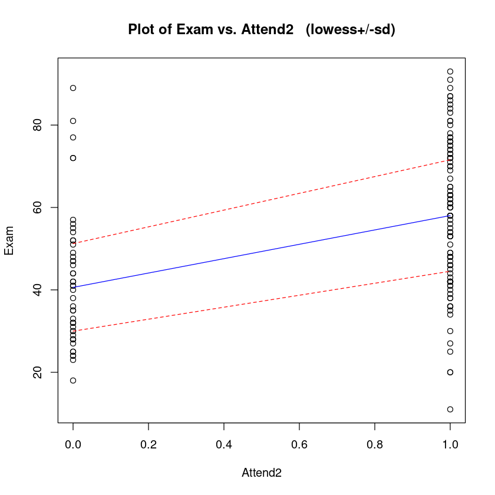
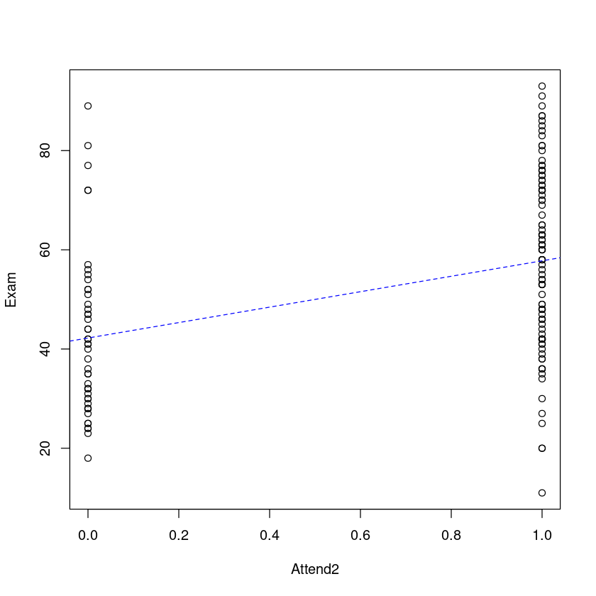
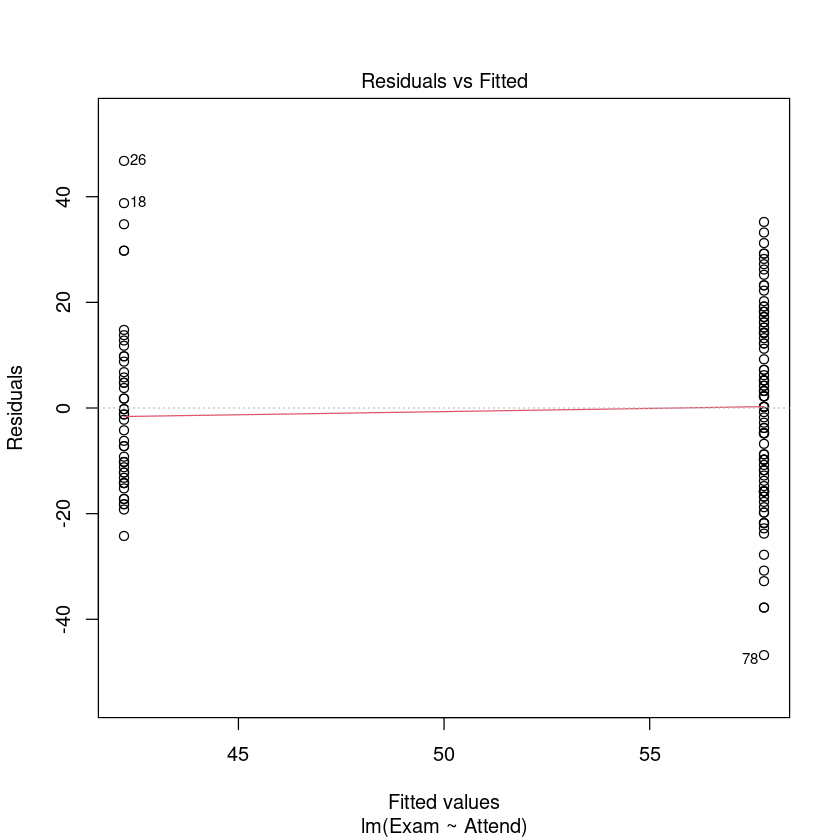
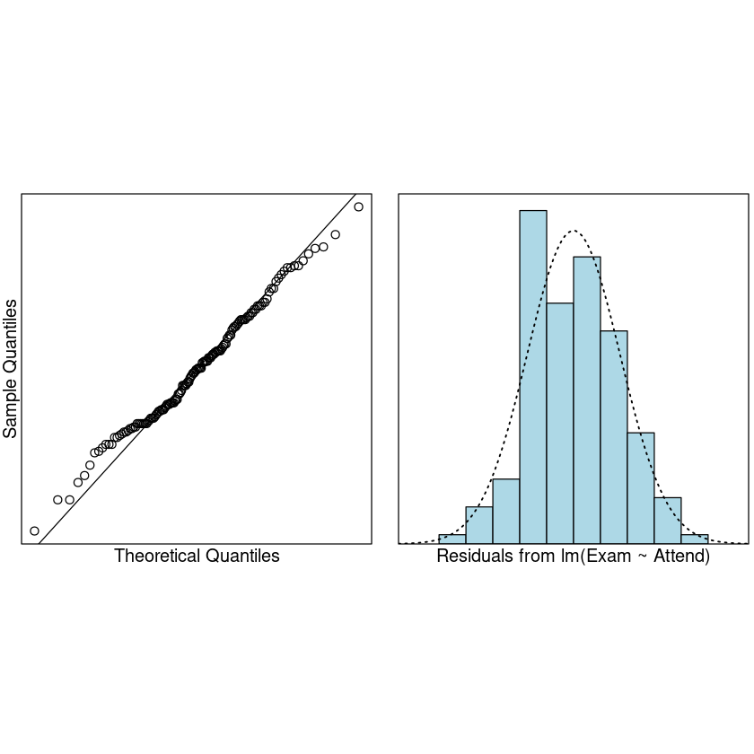
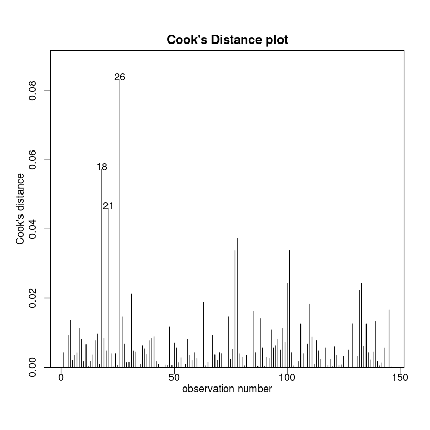

5. Linear models with a categorical (factor) explanatory variable#
本节需要的包：
require(s20x)
Show code cell output
Loading required package: s20x
5.1. Using categorical variables as explanatory variables by using indicator variables#
使用指标变量将分类变量用作解释变量
library(s20x)
## Importing data into R
Stats20x.df <- read.table("../data/STATS20x.txt", header = T)
## Change Attend from a character variable to a factor variable
Stats20x.df$Attend <- as.factor(Stats20x.df$Attend)
## Examine the data
Stats20x.df$Attend[1:20]
- Yes
- Yes
- Yes
- Yes
- No
- Yes
- Yes
- No
- Yes
- Yes
- No
- Yes
- No
- No
- No
- Yes
- Yes
- No
- Yes
- Yes
Levels:
- 'No'
- 'Yes'
简要分析数据集，确保有你需要的可能的关系：
summaryStats(Stats20x.df$Exam, Stats20x.df$Attend)
plot(Exam ~ Attend, data = Stats20x.df)
Sample Size Mean Median Std Dev Midspread
No 46 42.21739 40.5 16.34206 20.50
Yes 100 57.78000 58.0 17.67757 28.25
缺勤的确会让学生成绩变低，在数据分布上的确有一定的关系。
为了在后面进行更好的分析，我们将缺勤的 Yes 和 No 转换为 1 和 0：
# Make a new variable Attend2 which is 1 if Attend = "Yes" and 0 otherwise
# Note how we use two equal signs, ==, to test equality
Stats20x.df$Attend2 <- as.numeric(Stats20x.df$Attend == "Yes")
with(Stats20x.df, table(Attend, Attend2))
Attend2
Attend 0 1
No 46 0
Yes 0 100
trendscatter(Exam ~ Attend2, data = Stats20x.df)

The linear model for the expected value of is
\[
E[Exam|Attend2] = \beta_0 + \beta_1 Attend2
\]
其中 \(\beta_0\) 是截距，即所有缺勤的均值；\(\beta_1\) 是考试成绩和缺勤的关系，由缺勤和出勤的成绩关系共同决定。
examattend2.fit <- lm(Exam ~ Attend2, data = Stats20x.df)
summary(examattend2.fit)
Call:
lm(formula = Exam ~ Attend2, data = Stats20x.df)
Residuals:
Min 1Q Median 3Q Max
-46.780 -13.108 -0.217 12.642 46.783
Coefficients:
Estimate Std. Error t value Pr(>|t|)
(Intercept) 42.217 2.547 16.578 < 2e-16 ***
Attend2 15.563 3.077 5.058 1.27e-06 ***
---
Signif. codes: 0 ‘***’ 0.001 ‘**’ 0.01 ‘*’ 0.05 ‘.’ 0.1 ‘ ’ 1
Residual standard error: 17.27 on 144 degrees of freedom
Multiple R-squared: 0.1508, Adjusted R-squared: 0.145
F-statistic: 25.58 on 1 and 144 DF, p-value: 1.271e-06
上述拟合代表 x 为 Attend2（0 和 1） 时，y 的期望值，即考试成绩的期望值。
但注意事实上，直接使用 lm() 函数进行拟合，也能得出正确的结果，因为 lm() 函数会自动将分类变量转换为指标变量（AttendYes）：
examattend.fit <- lm(Exam ~ Attend, data = Stats20x.df)
summary(examattend.fit)
Call:
lm(formula = Exam ~ Attend, data = Stats20x.df)
Residuals:
Min 1Q Median 3Q Max
-46.780 -13.108 -0.217 12.642 46.783
Coefficients:
Estimate Std. Error t value Pr(>|t|)
(Intercept) 42.217 2.547 16.578 < 2e-16 ***
AttendYes 15.563 3.077 5.058 1.27e-06 ***
---
Signif. codes: 0 ‘***’ 0.001 ‘**’ 0.01 ‘*’ 0.05 ‘.’ 0.1 ‘ ’ 1
Residual standard error: 17.27 on 144 degrees of freedom
Multiple R-squared: 0.1508, Adjusted R-squared: 0.145
F-statistic: 25.58 on 1 and 144 DF, p-value: 1.271e-06
让我们将拟合模型可视化。在这里，我们将使用虚拟变量拟合我们的模型得到的"最佳"估计直线绘制出来。
plot(Exam ~ Attend2, data = Stats20x.df)
## Add the lm estimated line to this plot where a=intercept, b=slope
abline(coef(examattend.fit), lty = 2, col = "blue")

模型建立好了，接下来就是我们经典的模型检验三步走了：
残差均值接近于 0
残差满足正态分布
没有或排除了异常点
plot(examattend.fit, which = 1)
normcheck(examattend.fit)
cooks20x(examattend.fit)



## Create data frame of values of interest: Attend=="Yes" and "No"
## Make sure that the names of vars are exactly the same as in the data frame
preds.df <- data.frame(Attend = c("No", "Yes"))
predict(examattend.fit, preds.df, interval = "confidence")
predict(examattend.fit, preds.df, interval = "prediction")
| fit | lwr | upr | |
|---|---|---|---|
| 1 | 42.21739 | 37.18401 | 47.25077 |
| 2 | 57.78000 | 54.36619 | 61.19381 |
| fit | lwr | upr | |
|---|---|---|---|
| 1 | 42.21739 | 7.710259 | 76.72452 |
| 2 | 57.78000 | 23.471673 | 92.08833 |
再次强调：“confidence”是代表均值预测范围，而“prediction”是代表个体预测范围。